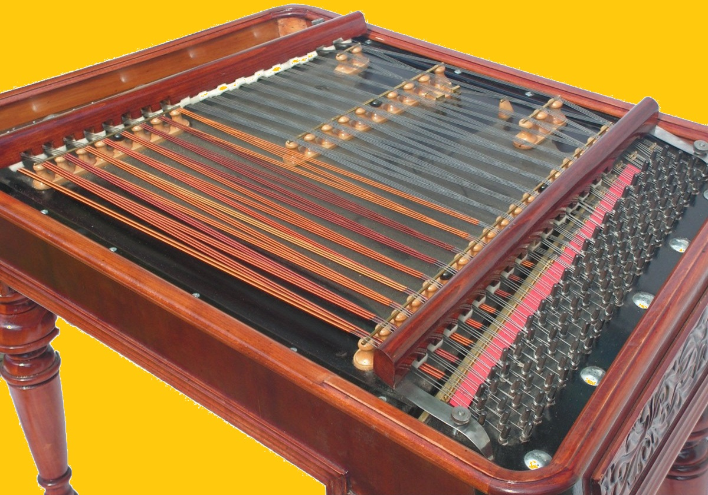
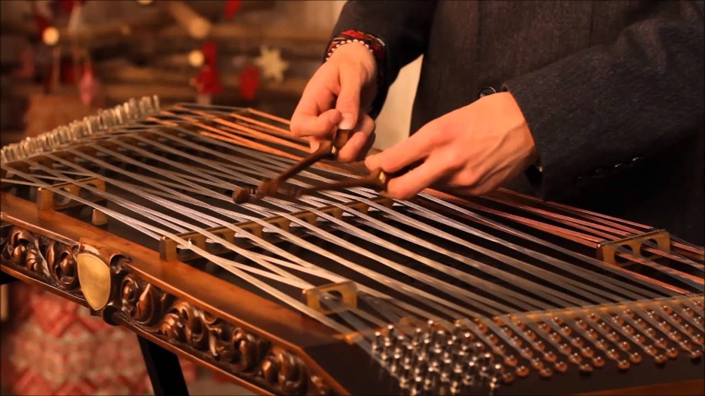

Țambalul
Istoria Descriere

Țambalul este un tip de cordofon compus dintr-o cutie mare, trapezoidală, așezată pe picioare, cu corzi metalice întinse deasupra și o pedală de amortizare dedesubt. A fost proiectat și creat de V. Josef Schunda în 1874 la Budapesta, pe baza modificărilor sale aduse instrumentelor tradiționale de tip țiteră cu ciocănele, deja prezente în Europa Centrală și de Est.
Astăzi, instrumentul este folosit în principal în Ungaria, Slovacia, Moravia, Belarus, România, Moldova și Ucraina.
Țambalul este de obicei cântat lovind corzile aflate în partea superioară a instrumentului cu două ciocănele, adesea învelite în bumbac la vârfuri. Corzile de oțel pentru sunetele înalte sunt dispuse în grupuri de câte 4 și sunt acordate la unison. Corzile pentru sunetele joase, care sunt înfășurate în cupru, sunt dispuse în grupuri de câte 3 și sunt, de asemenea, acordate la unison. Sistemul de clasificare Hornbostel–Sachs pentru instrumente muzicale înregistrează țambalul cu numărul 314.122-4,5.
Istoria țambalului
Țambalul modern de concert maghiar a fost proiectat și creat de V. Josef Schunda în 1874 la Budapesta, pe baza modificărilor sale aduse țiterelor populare existente. El a prezentat un prototip timpuriu cu unele îmbunătățiri la Expoziția Mondială de la Viena din 1873, atrăgând aprecieri din partea publicului și stârnind interesul unor politicieni maghiari de rang înalt, precum József Zichy, Gyula Andrássy și regele Franz Joseph. A continuat apoi să lucreze pentru a modifica și perfecționa designul său. A extins lungimea corzilor și a redesenat poziția punților pentru a îmbunătăți tonul și gama muzicală. A adăugat amortizoare grele care permiteau un control mai mare asupra rezonanței corzilor și o bară metalică în interiorul instrumentului pentru a-i crește stabilitatea. Patru picioare detașabile au fost adăugate pentru a susține acest instrument mult mai mare; predecesorii săi folclorici erau de obicei cântați pe un butoi sau pe o masă.
Schunda a început producția de serie a țambalului său de concert în 1874, fabricându-le într-un atelier de piane situat pe strada Hajós, vizavi de Opera din Budapesta, în Pest. A început de asemenea să dezvolte o metodă de interpretare și o școală pentru a populariza noul său instrument, recrutând în cele din urmă pe Géza Allaga, un muzician și pedagog important, pentru a publica metode de învățare. Muzicieni maghiari de renume, precum Franz Liszt, au devenit din ce în ce mai interesați de instrument și de posibilitățile sale. Instrumentul a devenit rapid popular atât în rândul burgheziei, cât și al muzicienilor romi, iar până în 1906, Schunda produsese peste zece mii de instrumente.
Walter Zev Feldman a reluat introducerea instrumentului în muzica populară evreiască și în derivatele acesteia în anii 1970.
O descriere a instrumentului
Instrumentele de concert realizate de la Schunda încoace sunt complet cromatice. Sistemul de acordaj al lui Schunda a stabilit o gamă standard de patru octave plus o terță majoră; extinzându-se de la nota C până la e′′′ (notație Helmholtz). Țambalul a continuat să evolueze, iar instrumentele moderne de concert sunt adesea extinse și includ numeroase îmbunătățiri față de designul original al lui Schunda. Aceste instrumente pot avea acum o gamă de cinci octave complet cromatice, de la AA până la a′′′.
Constructorii contemporani de țambale creează, de asemenea, instrumente mai mici. Acestea variază de la versiuni mai ușoare ale modelului original de concert al lui Schunda, până la țambale complet cromatice, portabile (care folosesc modelul de acordaj și dispunerea notelor specifice lui Schunda, dar cu o gamă mai redusă în registrul grav). Producătorii moderni continuă, de asemenea, să construiască instrumente noi și tradiționale în stil folcloric.
O versiune mai mică și mai portabilă a țambalului de concert a fost produsă în Ucraina între anii 1950 și 1980, care avea picioare detașabile și amortizoare, dar putea fi transportată mai ușor decât instrumentul de concert mai mare. Aceste instrumente au fost produse de fabrica din Cernihiv și de atelierul de instrumente populare Melnytso-Podilsk, care producea, de asemenea, multe alte tipuri de instrumente populare.

